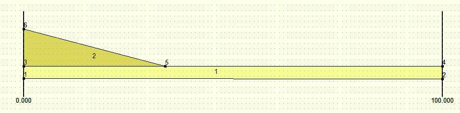
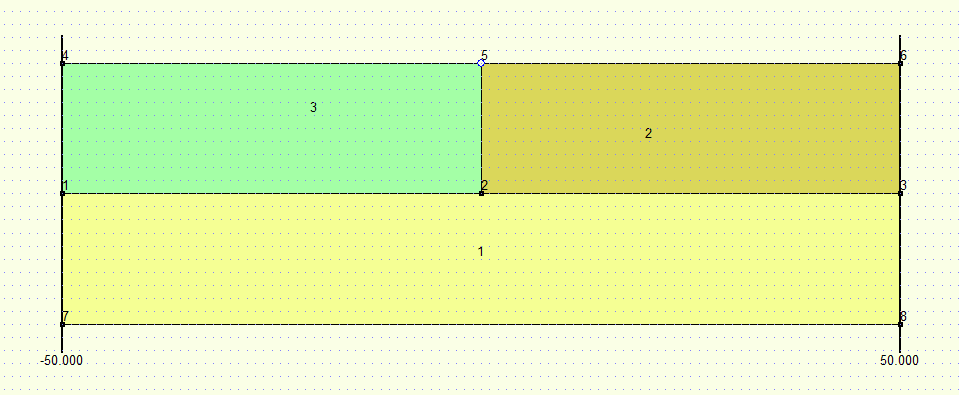

D-Settlement¶
D-Settlement model¶
The D-Series D-Settlement model definition. |
Tutorial¶
You can find the D-Settlement tutorial here: Tutorial D-Settlement
Fit for settlement plate¶
With a fit calculation, the match between predicted and measured settlements can be improved by automatic scaling of soil properties. A close fit will improve the continued prediction of final and residual settlements. To perform a fit for settlement plate calculation, the following settings are required:
# In the model settings, the fit option must be activated:
DSettlementModel().datastructure.input_data.model.is_fit_for_settlement_plate = Bool.TRUE
# In the fit calculation, the fit must be activated and the vertical along which the fit is performed must be defined:
dm.fit_calculation.fit_vertical_number = 1
dm.fit_calculation.is_fit_calculation = Bool.TRUE
Note that fit_vertical_number corresponds to the (zero-based) index of the vertical: the first vertical has index 0, the second vertical index 1, etc…
Make sure that the measurement file (text file) defined in DSettlementModel().datastructure.input_data.fit is present.
As results of the fit calculation, the fit factors of the selected soil properties and the coefficient of determination are available in DSettlementModel().datastructure.input_data.fit of the output file.
Geometry¶
Add layer¶
In order to add a layer in D-Settlement it is required to first set the head lines and the boundaries.
Add boundary¶
The only required input for adding a boundary is a list of points. The boundary needs to fulfill a number of requirements:
The list of points is required to range from the left side to the right side of the geometry.
None of the boundaries in the geometry may cross each other (touching is allowed).
Each boundary in the geometry besides the surface level and the bottom, is required to be used twice. Once as the top boundary of one layer, and another time as the bottom boundary of another layer.
When you desire to set up a boundary with vertical parts, it is required to arrange the points of the boundary from left to right and from bottom to top.
It is important that you pay attention to the above requirements, as D-Settlement does not return an error when the above requirements are not fulfilled. Instead an unwanted geometry is generated. Below, a visual example is given of how a geometry should be created.
In the above figure, two layers and six points are shown.
- layer 1:
bottom boundary points: 1, 2
top boundary points: 3, 5, 4
- layer 2:
bottom boundary points: 3, 5, 4
top boundary points: 6, 5, 4
Note that the top boundary of layer 1 is reused as the bottom boundary of layer 2. An easily made mistake is to first create layer 1 by adding: bottom boundary points: (1, 2) and top boundary points (3, 4). And then layer 2 by adding: bottom boundary points: (3, 5, 4) and top boundary points (6, 5, 4). When this mistake is made, it is possible that layers start overlapping each other, this is easily overseen.
Below another example is given with a vertical boundary part:
In the above figure, three layers and eight points are shown.
- layer 1:
bottom boundary points: 7, 8
top boundary points: 1, 2, 3
- layer 2:
bottom boundary points: 1, 2, 3
top boundary points: 1, 2, 5, 4
- layer 3:
bottom boundary points: 1, 2, 5, 4
top boundary points: 4, 5, 6
In the above example, an easily made mistake is to let boundaries cross. For example by adding bottom boundary points for both layer layer 2 and layer 3: (1, 2, 3). And top boundary points for layer 2: (1, 2, 5, 6); and for layer 3: (4, 5, 2, 3). In this mistake, the boundaries cross at point 2 and 5.
Since the above example has a vertical part in the boundary (between point 2 and 5), it is important to think about the order in which the points are added to the boundary. Points should be ordered from left to right and from bottom to top. I.e. the order and point numbers of the points in the example is the only allowed possibility.
Below example code is is shown on how to add boundaries in the geolib code to create the above geometry.
from geolib.geometry.one import Point
from geolib.models.dsettlement.dsettlement_model import DSettlementModel
points = [
Point(x=-50, z=-10), #0
Point(x=50, z=-10), #1
Point(x=-50, z=0.0), #2
Point(x=0, z=0.0), #3
Point(x=0.0, z=-10.0), #4
Point(x=-50, z=-20), #5
Point(x=50, z=-20), #6
Point(x=50, z=0.0), #7
]
dm = DSettlementModel()
b1 = dm.add_boundary(points=[points[0], points[4], points[1]]) # points (1, 2, 3)
b2 = dm.add_boundary(points=[points[2], points[3], points[7]]) # points (4, 5, 6)
b3 = dm.add_boundary(points=[points[0], points[4], points[3], points[7]]) # points (1, 2, 5, 6)
b4 = dm.add_boundary(points=[points[5], points[6]]) # points (7, 8)

{kind=link}
{kind=link}